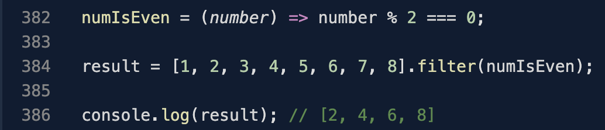

Higher Order Functions
A higher order function is a function that takes a function as an argument, or returns a function .
on the contray to a first order function that doesnt allow functions to be passed as arguments or return functions.
A good use of a higher order function, is when creating super complex functions you can break that complex function into smaller functions and then piece those functions together to make that complex function you were looking for. They are good at breaking up logic to simplify the level of complexity within code.
practicing the use of higher order functions limits the amount of bugs and also makes the code easier to read and understand.
Functions As Arguments
As you can see the filter function is using the function numIsEven as an argument. A function with a function as an argument.
Functions Returning Functions
Here you can see add is a function asking for num1 which then returns a function asking for num2.